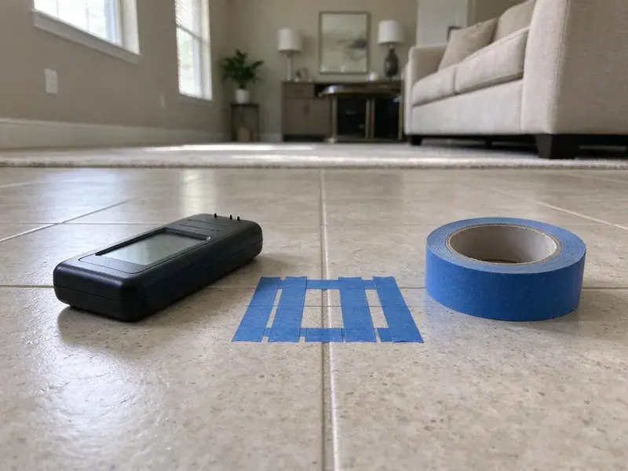

Hydrojet Plumbing in Wahiawa, HI
When snaking only pokes a hole in the clog, hydrojetting in Wahiawa, HI cleans the pipe wall to wall and restores full flow.
- Modern Technology
- Residential & Commercial Lines
- Pipe-Safe Cleaning
- Fast, Powerful Cleaning

Clear Your Drains with Hydrojetting in Wahiawa, HI.
Our team is ready to provide top-tier hydrojet service for your residential or commercial property.
Expert Hydrojet Plumbing in Wahiawa, HI for Clear Drains
HKL Plumbing uses trailer and cart jetters that push water at 3,000 to 4,000 PSI through specialized nozzles to scrub the inside of drain and sewer pipes. The spray cuts through grease, mineral scale, sludge and fine roots, then washes the debris downstream.
Our expertise includes:
- Camera inspection before and after jetting with recorded video
- Remove stubborn grease and sludge buildup.
- Thorough cleaning for preventive maintenance

Additional Plumbing Maintenance Services in Wahiawa, HI
Our maintenance and specialty plumbing services in Wahiawa, HI catch small problems before they become emergencies.


Customers
Why Choose HKL Plumbing for Hydrojet Plumbing in Wahiawa, HI?
Hydrojet plumbing is a better solution for pipe cleaning, offering a level of thoroughness that traditional methods cannot match. It makes sure your plumbing system operates efficiently, reducing the likelihood of future blockages and costly repairs.
- Wall-to-Wall Cleaning, Jetting scours the entire inside of the pipe, removing grease and scale that cause recurring clogs.
- Deep Clean, Hydrojetting cleans the entire pipe wall, removing debris and buildup, unlike snaking which only punches a hole.
- Verified Results, Before and after camera video shows exactly how much flow we restored.
Citywide Coverage
Our team is familiar with the plumbing configurations found throughout Wahiawa, allowing us to provide targeted hydrojet plumbing solutions. We pride ourselves on quick response times and reliable service across the entire area.
Experienced Team
Our technicians at HKL Plumbing are well trained and experienced in hydrojet plumbing, understanding the details of pipe materials and clog types. They train regularly to stay current with the latest techniques and equipment in the industry.
Safety-First Approach
Safety and adherence to local plumbing codes are paramount for every hydrojet plumbing service we perform in Wahiawa, HI. We ensure all procedures are carried out safely, protecting both your property and our technicians.
Trusted Certified Wahiawa Plumbing Services Professionals
At HKL Plumbing, we take pride in providing certified plumbing services throughout Wahiawa, HI. Backed by recognized industry credentials, our experienced plumbers combine technical skill with genuine customer care. Whether it is repair, installation, or maintenance, we follow strict safety and quality standards to deliver long-lasting results you can trust.
Call Us Now PHCC Plumbing Contractor Recognition
PHCC Plumbing Contractor Recognition Better Business Bureau (BBB) Accreditation
Better Business Bureau (BBB) Accreditation Angi Certified Pro
Angi Certified Pro ISO 9001 Quality Management Certification
ISO 9001 Quality Management CertificationReliable Hydrojet Plumbing Services in Wahiawa, HI
Hard Water Scale Removal in Wahiawa, HI
Hard water can lead to significant mineral scale buildup inside pipes over time, reducing flow and creating rough surfaces where other debris can snag. Around Wahiawa, sediment and fine volcanic grit can still clog aerators, valves, and water heater tanks, so periodic flushing is worthwhile. Our hydrojet plumbing service is highly effective at blasting away stubborn calcium and magnesium scale. By restoring the inner diameter of your pipes, we improve drainage and prevent future clogs caused by mineral accumulation. This is particularly important for homes with aging galvanized or cast iron pipes in Wahiawa.

Storm and Yard Drain Jetting in Wahiawa, HI
Yard drains, channel drains and downspout lines fill with sand, silt and leaves between storms. When the rain comes, a blocked line sends water back toward the house. Hurricanes reach Hawaii only occasionally, but strong storms can still cause power outages, flooding, and damage to outdoor plumbing and water heaters. We jet these lines clear before the rainy season or after a big storm. Clean storm lines carry runoff away from foundations the way they were meant to.
Commercial Hydrojet Plumbing in Wahiawa, HI
Businesses in Wahiawa, HI often face challenges with their plumbing systems due to higher usage and specific waste types. Our commercial hydrojet plumbing service is equipped to handle large-scale blockages common in restaurants, retail spaces, and industrial facilities. We effectively remove fats, oils and grease, food debris, and other commercial waste, preventing costly downtime and keeping your business running smoothly. We can often schedule these services during off-peak hours to minimize disruption.
Main Sewer Line Jetting in Wahiawa, HI
The main line from your home to the street carries everything, so buildup there causes backups in multiple fixtures. We jet from the nearest cleanout and work the nozzle all the way to the city tap. Afterward, a camera inspection shows whether the line is clean or has structural damage. Clean lines also give a clearer picture for any future sewer repairs.
Emergency Hydrojet Service in Wahiawa
A sewage backup into a tub or floor drain needs fast attention. Our technicians respond quickly, clear the immediate blockage and then jet the line to keep it from coming right back. We camera the line once it is clear so you know whether the cause was buildup or a broken pipe. That way your emergency call also gives you a plan.
Sewer Camera Inspection Before Hydrojetting in Wahiawa
Before performing any hydrojet plumbing in Wahiawa, HKL Plumbing usually conducts a thorough sewer camera inspection. This allows us to correctly diagnose the type, location, and severity of the blockage, as well as assess the condition of your pipes. Knowing if there is existing damage like cracks or collapses helps us determine the right pressure and nozzle, ensuring the hydrojetting process is safe and effective, especially for lines under older slabs and foundations.
Commercial and Restaurant Hydrojetting in Wahiawa
Restaurants, hotels, apartment complexes and shopping centers rely on drains that handle heavy daily volume. We jet kitchen lines, floor drains and lines to grease interceptors to keep them flowing between pump-outs. Scheduled jetting helps businesses avoid backups during busy hours and stay in good standing with local pretreatment rules. We can work after closing to avoid disrupting customers.

Preventive Hydrojet Maintenance in Wahiawa
Preventive hydrojet maintenance is a smart investment for homes and businesses in Wahiawa, especially for properties with older plumbing or those prone to recurring clogs. By scheduling periodic hydrojetting, we can remove buildup before it becomes a major problem, saving you from emergency repairs and maintaining strong pipe performance. This forward-looking approach is particularly helpful where hard water or shifting soil contributes to pipe issues.
Professional Hydrojet Plumbing Near Me in Wahiawa, HI
Working locally means we know the pipe materials common in each part of Wahiawa, from older cast iron to newer PVC and ABS. That helps us set pressure correctly and clean safely. It also means fast follow-up if you ever need us again.
If you're searching for reliable hydrojet plumbing near me in Wahiawa, look no further than HKL Plumbing. Our local team is equipped with professional hydrojetting equipment to tackle even the most stubborn drain and sewer line blockages. We are committed to providing fast, professional service to every homeowner and business in the area.
HKL Plumbing at a Glance
- Licensed and insured plumbers serving Wahiawa, HI
- Same-day appointments and 24/7 emergency response
- Upfront, flat-rate pricing before work begins
- 4.8-star rated by 529+ Hawaii customers
Wahiawa Map
Wahiawa Information
- Population
- 18,658
- Area codes
- Local
- Service area
- Wahiawa and communities within 40 miles
- Nearby
- Mililani Mauka, Schofield Barracks, Mililani Town, Waipio
Hydrojet plumbing is important for homes in Wahiawa, HI, because shifting soil can damage sewer lines and older pipes are prone to root intrusion and mineral buildup. Copper was the standard for many years, while newer homes and remodels in Hawaii increasingly use PEX, which resists corrosion from salt air.
Expert Services
Trust our professionals for reliable HKL Plumbing solutions in Wahiawa, HI.
Our Specialized Plumbing Services in Wahiawa, HI
At HKL Plumbing, we provide a complete range of plumbing services across Wahiawa, HI. From leak detection to full system installations, our team ensures fast, precise, and affordable service for both residential and commercial properties. Explore our core services below:


How Our Hydrojet Plumbing Service Works in Wahiawa, HI
Our hydrojet plumbing process is designed for maximum effectiveness and minimal disruption to your home or business.
Request a Quote
Call (808) 649-6718 and describe your drain problem and how often it recurs. We schedule a visit and give you jetting pricing in advance.
Camera Inspection
We run a camera through the line to check pipe condition and find the blockage. Then we choose the right nozzle and pressure for your pipe.
Jet and Verify
We jet the line from end to end and flush the debris. A follow-up camera pass shows you the clean pipe before we go.
Frequently Asked Questions About Hydrojet Plumbing in Wahiawa
Residential hydrojetting in Wahiawa usually costs $400 to $900, including a camera inspection. Commercial lines, long runs or heavy root intrusion can cost $800 to $2,000 or more. We give you a firm price after reviewing the line.
Jetting removes the roots inside the pipe, but roots will grow back if the joint or crack remains open. Regular jetting can control them for years. Pipe lining or repair is the permanent fix.
Most residential jobs take one to three hours, including camera inspections. Commercial lines with multiple runs can take a half day or more. We give you an estimate when we book.
HKL Plumbing uses professional hydrojetting equipment from reputable manufacturers known for their power and reliability, such as Spartan Tool and MyTana. These professional-grade machines mean we can deliver high quality, effective drain cleaning services for our clients in Wahiawa.
The duration of hydrojet plumbing depends on the complexity of the clog and the length of the pipe being cleaned. Most residential hydrojetting jobs in Wahiawa can be completed within 1 to 3 hours, but more severe or extensive blockages, especially those involving main sewer lines or heavy root intrusion, can take longer.
We guarantee the line will flow freely when we leave, and our service warranty is written on your invoice. If structural damage is found, we explain it before work starts so you know what jetting can and cannot fix. That keeps expectations clear.
Yes, hydrojet plumbing is highly effective at clearing tree roots from sewer lines. We use specialized nozzles designed to cut through even dense root masses. The high-pressure water then flushes the severed roots and other debris out of the pipe, restoring full flow. This is a proven and effective solution for many Wahiawa homes.
HKL Plumbing stands by the quality of our hydrojet plumbing services. We usually offer a warranty on our work, covering a specific period after the service. Details of the warranty will be provided with your service agreement.
What People Are Saying About Our Plumbing Experts?

Mark T.
When our office needed drain cleaning, HKL Plumbing provided quick, reliable service. The plumber arrived on time and made sure every drain flowed perfectly before leaving. Very satisfied.
Drain Cleaning · Wahiawa, HI
Laura S.
I scheduled a water heater replacement, and the team made the process smooth and affordable. The new unit works perfectly, and they cleaned up after completing the job.
Water Heater Replacement · Royal Kunia, HI
Patricia H.
We had a slab leak that two other companies could not find. HKL Plumbing located it in under an hour, explained our options, and the price matched the quote to the dollar.
Slab Leak Repair · Mililani Mauka, HI
Daniel K.
A pipe burst at 11 pm and they actually answered. The plumber showed up within the hour, shut everything down, and had us back to normal the next morning. Could not ask for more.
Emergency Plumbing · Mililani Mauka, HI
Emily R.
I called HKL Plumbing for plumbing repair, and the technician was fast, polite, and thorough. They explained the problem clearly and fixed it the same day. I will definitely hire them again. Highly recommended!
Plumbing Repair · Waipio, HISofia M.
Two new toilets installed in one visit, no mess left behind, and the tech even adjusted a faucet he noticed was dripping. Fair pricing and really friendly.
Toilet Installation · Pearl City, HI